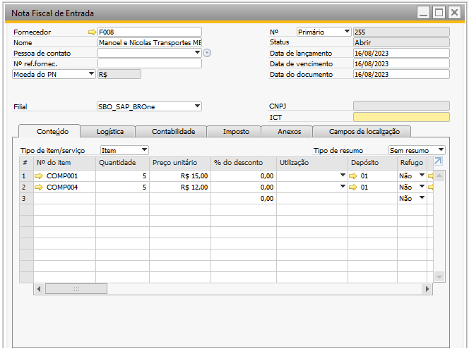
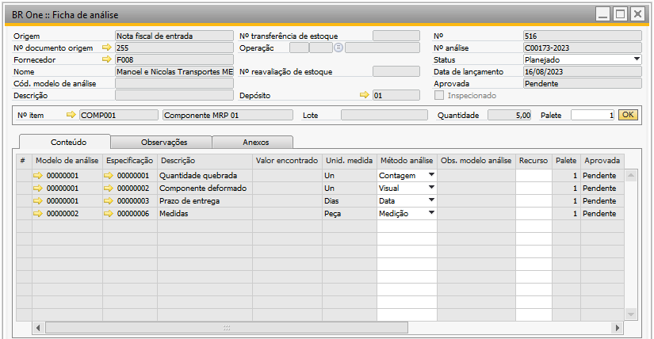

Criar ficha de análise automaticamente na Nota Fiscal de Entrada
O parâmetro “Criar ficha de análise automaticamente” junto com o parâmetro “Recepção de mercadoria/Nota fiscal de entrada” indica a geração automática da ficha de análise para itens de compra que entram no depósito através dos documentos de Recebimento de mercadorias e Nota fiscal de entrada, desde que o item possua configurado um ou mais modelos de análises.

Nota Fiscal de Entrada
Ao adicionar uma “Nota fiscal de entrada” será gerado fichas de análises para os itens que possuem modelos de análises configurados em seu cadastro.
Nesse contexto, consideramos o exemplo dos itens COMP001 e COMP004. Enquanto o item COMP001 está configurado com dois modelos de análise, o item COMP004 não possui nenhum modelo atribuído. Devido a essa configuração, somente uma ficha de análise será gerada para o item COMP001.
Entretanto, se, posteriormente, após incluír o documento de recepção de mercadoria e, consequentemente, atribuir um modelo de análise para o item COMP004, haverá a possibilidade de criar a respectiva ficha de análise usando o “Assistente de Criação de Ficha de Análise”.
